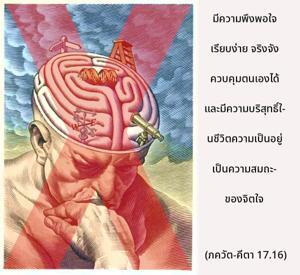
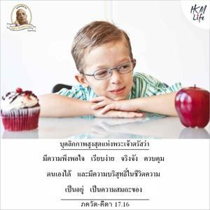
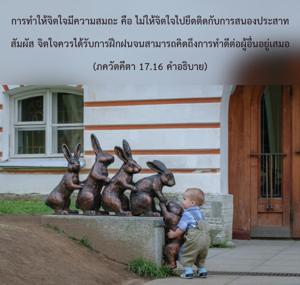

มีความพึงพอใจ เรียบง่าย จริงจัง ควบคุมตนเองได้ และมีความบริสุทธิ์ในชีวิตความเป็นอยู่ เป็นความสมถะของจิตใจ



การทำให้จิตใจมีความสมถะ คือ ไม่ให้จิตใจไปยึดติดกับการสนองประสาทสัมผัส จิตใจควรได้รับการฝึกฝนจนสามารถคิดถึงการทำดีต่อผู้อื่นอยู่เสมอ วิธีการฝึกฝนจิตใจที่ดีที่สุด คือ มีความจริงจังในความคิด ไม่ควรเบี่ยงเบนจากกฺฤษฺณจิตสำนึก และต้องหลีกเลี่ยงการสนองประสาทสัมผัสอยู่เสมอ การทำให้ธรรมชาติของตนเองบริสุทธิ์ คือ มีกฺฤษฺณจิตสำนึก ความพึงพอใจของจิตบรรลุได้ด้วยเพียงแต่นำจิตใจออกห่างจากความคิดเพื่อรื่นรมย์ทางประสาทสัมผัส หากเราคิดถึงแต่ความรื่นรมย์ทางประสาทสัมผัสมากเท่าไรจิตใจก็จะไม่มีความพึงพอใจมากเท่านั้น ในยุคปัจจุบันเราใช้จิตใจไปในหลายๆ ทางเพื่อสนองประสาทสัมผัสโดยไม่จำเป็น จึงเป็นไปไม่ได้ที่จิตใจจะมีความพึงพอใจ วิธีที่ดีที่สุดคือ หันเหจิตใจมาที่คัมภีร์พระเวทซึ่งเต็มไปด้วยเรื่องราวที่น่าพึงพอใจ ใน ปุราณ และ มหาภารต เราจะได้รับประโยชน์จากความรู้นี้ และกลายมาเป็นผู้บริสุทธิ์ จิตใจของเราควรหลีกเลี่ยงความไม่ซื่อตรง และควรคิดถึงประโยชน์สุขของสรรพสัตว์ทั้งหลาย ความนิ่งเงียบหมายความว่า เราคิดถึงความรู้แจ้งแห่งตนเสมอ บุคคลในกฺฤษฺณจิตสำนึกถือปฏิบัติความนิ่งเงียบอย่างสมบูรณ์ด้วยเหตุผลนี้ การควบคุมจิตใจหมายถึง ไม่ให้จิตใจยึดติดอยู่กับความรื่นเริงทางประสาทสัมผัส เราควรเป็นคนตรงไปตรงมาในการสัมพันธ์กับผู้อื่น และทำให้ชีวิตความเป็นอยู่บริสุทธิ์ คุณสมบัติทั้งหลายเหล่านี้รวมกันเป็นองค์ประกอบแห่งความสมถะทางจิตใจ